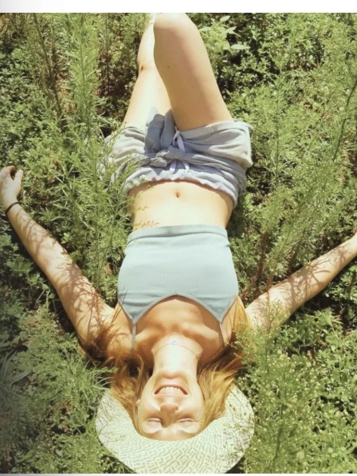

No es que no lo veas.
Hay una forma de vivir
en la que ya no
te reconoces.
No es falta de claridad.
Es el sistema desde el que estás intentando sostener trabajo, relaciones y decisiones sin incluirte a ti.
Ahí es donde trabajamos.
- ✦ +5 años acompanando procesos
- ✦ +100 mujeres acompañadas
- ✦ Respiración funcional certificada
- ✦ Thetahealing - Terapeuta emocional
- ✦ Facilitadora de cacao ancestral
Reconocimiento
Si algo aquí te resuena,
es porque ya lo estás viendo.
No trabajo con quien empieza. Trabajo con quien ya ha hecho camino y sigue sosteniendo lo mismo.
Sabes que no es por ahí
Estás en una conversacion, en tu trabajo, en una decisión y hay algo dentro que te dice: esto no es. Lo ves. Lo sientes. Pero no dices nada. Sigues. Te adaptas. Y luego te vas con esa sensacion de haberte fallado otra vez.
Te priorizas a ratos
Hay días en los que lo haces distinto. Te eliges. Pones un limite. Paras. Y lo notas. Pero no se sostiene. A los pocos días vuelves a ceder, a decir si cuando es no, a colocarte después de todo lo demas. Y no entiendes por que, si lo ves tan claro.
Hay algo que tira de ti
No es que no sepas hacerlo diferente. Es que en el momento en el que vas a hacerlo, lo notas en el cuerpo. Se cierra. Se activa. Dudas. Y vuelves a lo conocido. A lo que ya no encaja pero sabes sostener.
El método
No va de soltar.
Va de entender qué pasa
cuando intentas sostener.
Hay un momento muy concreto: sabes lo que tienes que hacer, vas a hacerlo, y algo en ti cambia. Lo notas en el cuerpo. Dudas. Lo pospones. Vuelves a lo mismo. No es falta de capacidad. Es lo que se activa en ti, de forma inconsciente, en ese punto.
Regulación
En ese momento, tu sistema se activa. Se acelera, se cierra o se pone en alerta. Trabajamos sobre esa respuesta: respiración, activacion y regulación. Porque si eso no cambia, vas a seguir saboteandote en el mismo punto.
Orden
No es lo que haces. Es el lugar que le das a cada cosa en tu vida. Cuando todo ocupa mas espacio que tu, acabas sosteniendo una vida en la que tu no estás. Reordenamos prioridades para que dejes de ponerte después de todo lo demas.
Coherencia
No se trata de hacerlo perfecto. Se trata de que, hagas lo que hagas, no sientas que te estás traicionando. Hay decisiones y formas de actuar que por dentro sabes que no van contigo. Y aun asi, las sigues sosteniendo.
Primera conexión sin coste
Antes de empezar, veo contigo
en que punto estás.
Sin estructura de sesion. Sin compromiso. Solo claridad de si esto es para ti.
Proceso 1:1 - 3 meses
Mentoria
Privada 1:1
Dejar de sostener tu vida desde el mismo lugar. Ocupar tu lugar en ella.
El orden de tu vida ahora mismo habla por ti. En que ocupa tu tiempo. En que ocupa tu energia. Y en el lugar en el que te estás colocando.
Cuando sabes que tendrias que parar y respondes otro mensaje. Cuando quieres poner un limite y vuelves a adaptarte. Cuando notas que el trabajo esta ocupando un lugar que no le corresponde pero sigues colocandolo por delante de ti.
Eso es lo que trabajamos.
- 12 sesiones 1:1 (1 por semana durante 3 meses)
- Primera conexión inicial - analizo tu momento, patrones y estructuro el proceso
- Acompañamiento entre sesiones - cuando algo importante este pasando, puedes escribirme
- Trabajo directo sobre patrones - no solo los ves, los cambias
- Reordenamiento de prioridades aplicado a tu vida real
- Regulación aplicada - herramientas para que tu cuerpo no te saque del punto
- Integracion en trabajo, relaciones, decisiones, limites
- Cacao como puente en momentos concretos (cuando aplica)
Valor del proceso: 1888€
1200€
Precio de lanzamiento - Tiempo limitadoPago completo o en 2, 3 o 4 cuotas.
Primera cuota antes de iniciar. Ultima antes de finalizar.
Con firma de acuerdo de compromiso.
"No necesitas mas herramientas. Necesitas dejar de sostener tu vida desde el mismo sistema."
Senales de que esto es para ti
- Ya has ido a terapia y sabes lo que tienes que cambiar, pero no lo sostienes
- Priorizas tu trabajo, familia y relaciones antes que a ti misma, de forma sistematica
- Sabes lo que necesitas pero en el momento de sostenerlo, te echas hacia atras
- Llevas tiempo funcionando bien pero desde un lugar que ya no es tuyo
22 - 24 Mayo 2026 - Cardedeu, Barcelona
SERENZA
Tres días donde el orden que sostienes fuera se detiene
para que dentro... todo encuentre su lugar.
No es un retiro de descanso.
Es una parada real donde el sistema baja,
la percepción cambia
y lo que llevas tiempo sin ver... aparece.
- Alojamiento completo
- Alimentación
- Cacao ceremonial
- Respiración guiada
- Trabajo de patrones
- Círculos de palabra
Sólo 12 plazas - Ver todo el detalle

acompanadas
práctica
propio
especializadas
Sobre mi
No trabajo con lo que dices que te pasa. Trabajo con lo que lo esta sosteniendo.
"Hay un punto en el que ya no falta informacion.
Falta estructura interna para sostenerla."
Mi trabajo nace ahí. No en la teoría. No en el desarrollo personal. En el momento en el que ves lo que tienes que hacer y aun así no lo haces.
Yo estuve ahí. Una ruptura me desordenó por completo. No era solo la relacion. Era todo lo que se sostenia desde ese lugar. Identidad. Direccion. Forma de vivir. Y en ese punto entendi algo que no se ensena: no es falta de claridad. Es falta de regulación para sostenerla.
Desde entonces, todo mi trabajo se construye sobre eso. Acompano a mujeres que ya han hecho trabajo interno. Que entienden. Que han ido a terapia. Que han probado distintas herramientas. Y que, aun asi, siguen repitiendo lo mismo. No por falta de capacidad. Sino porque su sistema sigue funcionando igual.
El mar no es un recurso visual en mi vida. Es estructura. El surf me enfrenta constantemente a lo que no controlo. A sostenerme sin rigidez. A leer el sistema en tiempo real. No puedo bajar en profundidad desde pequena. Y aun asi, es ahí donde mas conecto. Desde la superficie entendiendo lo que hay debajo. Eso define tambien como acompano.
Formación
Lo que dicen ellas
Mujeres que ya decidieron
Llegué creyendo que necesitaba mas estrategia. Salí entendiendo que lo que necesitaba era claridad. Son cosas completamente distintas. Jenifer me ayudo a ver esa diferencia.
Ana M.Directora de empresa - Madrid
El proceso con Jenifer fue el antes y el después. No es coaching, no es terapia. Es algo que no tenia nombre hasta que lo vivi y que cambio como tomo decisiones todos los días.
Laura G.Emprendedora - Barcelona
Fui al retiro con una decisión que llevaba dos años postergando. La tome el segundo dia. Tres meses despues sigo sosteniendo esa decisión y estoy mas tranquila que en años.
Sandra P.Lider de equipo - Valencia
El siguiente paso
No es que no sepas qué hacer.
Es que tu sistema no esta
preparado para sostenerlo.
Ahí es donde trabajo. Una primera conexión sin estructura de sesion, sin compromiso, para ver si esto es para ti.
"Cuando esto cambia,
todo se reordena."